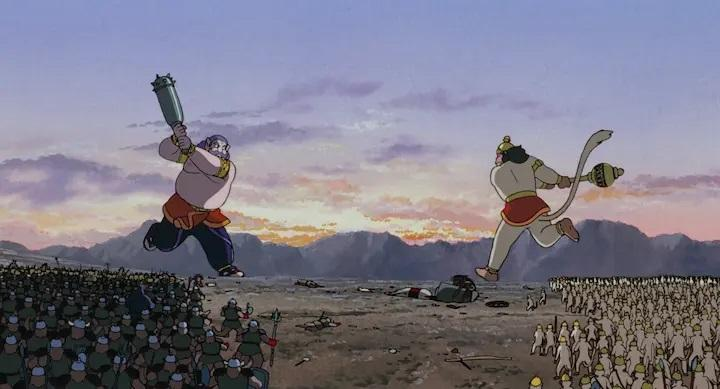

Disclaimer: This is a review of the 1993 feature-length animated film "Ramayana - The Legend of Prince Rama," co-produced in both India and Japan. It is credited in this review as a film from India. This was viewed with original English dub, and not the American English dub produced in 2001 with the renamed film title "The Prince of Light." I am not from India and I may be ignorant of certain aspects here. I think of myself as a feature-animation enthusiast, but even I had never heard of 1993's "Ramayana - The Legend of Prince Rama." It was thanks to the 2023 Fantasia Film Festival in Montreal that I heard of it and got to see it, with a recent 4K restoration (and a home release meant to follow, although the owners seem to plan on further festival showings and word of mouth to justify the cost). And that remaster is truly beautiful, far better than old copies you might find on the web - a Bluray would look marvelous. The production history is also a curious one. This movie is technically an anime, directed and animated primarily in Japan, after co-director Yugo Sako was inspired from the production of an unrelated documentary. While there was an opportunity for India to have a greater role in the production, they instead withdrew and would temporarily ban the finished movie, due to the cultural importance of the story and characters (the hero Rama is a God in the Hindu religon) and a sensitive political climate. Even though the movie was therefore animated in Japan, much of the film staff were from India, assisting in the portrayal and accuracy of the characters and customs. Later, the movie would seem to be a source of great pride in India, and this was an early example of more recent trends, where international countries try to leverage the popularity of Japanese anime to tell their own stories (with varying degrees of success). Animated by Toei Animation, "Ramayana" looks lavish. During action scenes in particular, great care is taken in the animation of trees violently swaying in the wind, or of waves of water. Some of these camera shots were quite ambitious for their time. The character designs for most of the side characters, and particularly enemies, is inspired, and there's a variety of unique monster / demon designs to appreciate. One could be forgiven to think this was a Studio Ghibli production, and the distinct culture and grandness in scope make this an interesting double-feature subject with 1997's "Princess Mononoke." More appropriately, it might fit in with anime movies such as 1990's "Like The Clouds, Like The Wind," or 1986's "Arion" (which portrayed a Greek legend). "Ramayana" is a great-looking pre-digital standalone anime feature. Unfortunately, the story falls apart a bit, at least in this adaptation. After a lengthy introductory exposition of the characters and history, the movie jumps through several moments in Prince Rama's adult life (pronounced "Ram" in the story). As a great warrior, a local town begs him and the King for Rama to slay demons that are terrorizing them. He and his brother do, and live in the region for years on, with Rama taking a wife named Sita. Destined to be crowned King, a despute from another party in the palace instead results in Rama being banished for 14 years. All this while, Rama is the image of perfection, bravery, kindness and patience - he takes the punishment without argument, and Sita and his loyal brother join him in a rural forest outside the kingdom. It isn't long before a demon king named Ravana (confusingly, pronounced "Raman" in the dub, such that it was hard to tell if characters were talking about the hero or villain of this tale), as well as his minions, hear of the incredible beauty of both Rama and Sita. After an attempt to steal Rama as a husband, Ravana visits them himself and kidnaps Sita to be his wife. With grief at this loss, Rama and his allies (primarily a kingdom of monkeys with warrior Hanuman and King Sugriva) prepare to save Sita and the other human captives, only possible with a war and complete defeat of Ravana.  That's a LOT to cover, and even with a very lengthy 2+ hours, it barely manages to fit in this one movie. The movie will jump in time with little warning, and if you were to step away for a few minutes, you'd be completely lost at where the story was coming back. There are frequent references to important characters and histories that don't appear in the movie. What I suspect is that knowing the original story of Rama and the others is essential to appreciate this animated version, as you would hopefully recognize a lot without explaination. Although I do also suspect that a second or third watching of the movie would be easier, now that I recognize some of the characters and their importance in the story. On it's own, there's still romance, drama, and (well-choreographed) action to help make the movie compelling. But there are still some decisions that will be lost on viewers from other cultures. For example, much of Rama's strength and power seems to come from arbitrary prayers and mantras that solve every problem, which occurs often. And since these are grand characters meant to be Gods, there are some epic moments, like literally moving mountains or fighting in the air. And occasionally Bollywood-style musical numbers, making the movie longer than it could have been. In my screening, there was riotous laughter when some of these moments casually appeared, which may or may not have been intentional by the filmmakers. In short, the story is dense, confusing, too long, and sometimes silly. It appears the old English cast were primarily actors from India, so there is some authenticity, and most of the characters do have appropriate accents. But it also sounds very much like a 1990's English dub of an anime, comparably as bad as other American examples at the time. The delivery and timing of some lines added to the unintentional laughter from my audience. The Hindi version might be an interesting option, but it doesn't appear to be available with this 4K remaster. As strange as it might sound, the 2001 US version, with a different voice cast and presumably an altered script and reduced runtime to help US audiences, might be more accessible, but this version is long lost. "Ramayana - The Legend of Prince Rama" is a fascinating curiousity, and the animation by itself makes it worth a visit. The story might be lost on anyone who doesn't already know it from outside the movie. But for those who do know it, either from cultural background or studies of India, this could be an interesting treat.
- "Ani" More reviews can be found at : https://2danicritic.github.io/ Previous review: review_Rail_Wars Next review: review_Rampo_Kitan_-_Game_of_Laplace